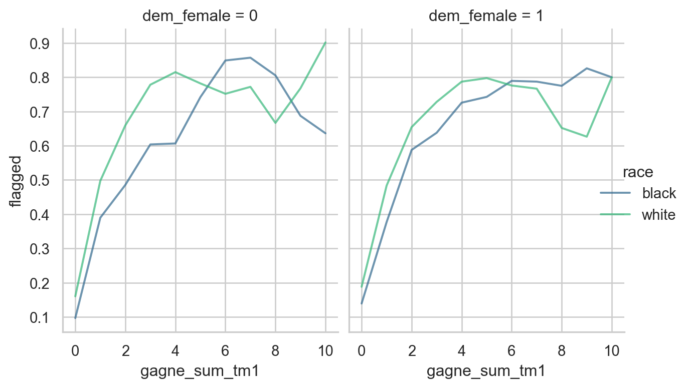
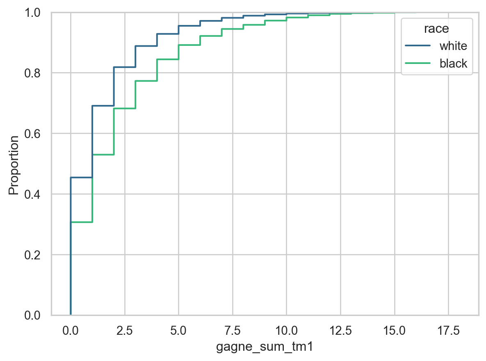
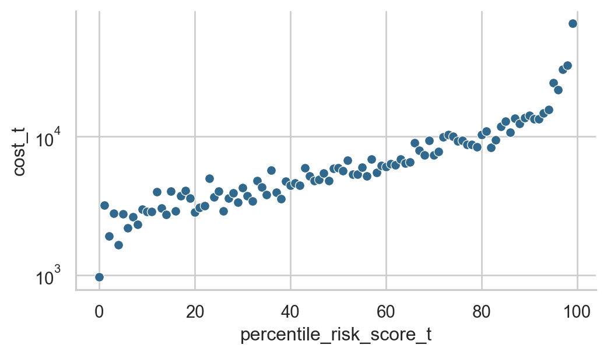
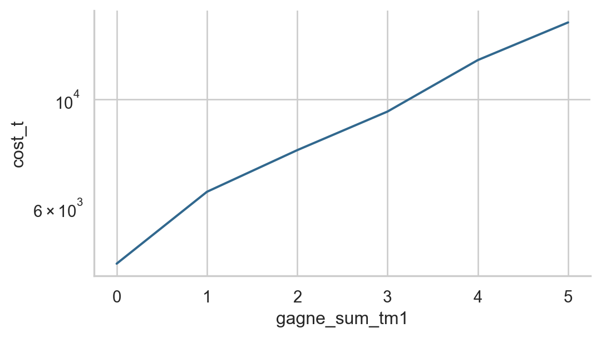
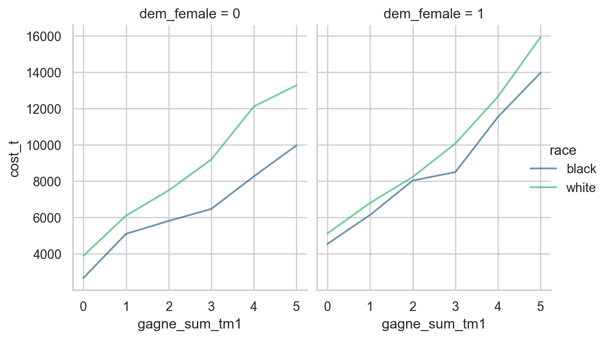

import pandas as pd
import seaborn as sns
from sklearn.linear_model import LogisticRegression
from matplotlib import pyplot as plt
import numpy as np
sns.set_theme(style="whitegrid", context="notebook")
sns.set_palette("viridis", n_colors=2)5 Dissecting Bias in Medical Risk Prediction
Open the live notebook in Google Colab or download the live notebook
.Introduction: Allocation and Bias
This set of lecture notes is largely based on the article Obermeyer et al. (2019).
Automated prediction systems are often used to make or inform decisions that affect people’s lives. Often these decisions relate to the allocation of resources:
- Who should receive a job opportunity?
- Who should be able to rent a rent-stabilized apartment?
- Who should receive intensive medical treatment?
When these algorithms make systematically different allocative recommendations for different groups of people, awarding resources to some while denying those same resources to others for arbitrary reasons, we may have an instance of allocative harm Crawford (2017) or allocative bias.
In this set of lecture notes, we’ll study a famous case of allocative bias in the distribution of medical care:
Obermeyer, Ziad, Brian Powers, Christine Vogeli, and Sendhil Mullainathan. 2019. “Dissecting Racial Bias in an Algorithm Used to Manage the Health of Populations.” Science 366 (6464): 447–53.
The full text of this article is available here.
In this study, the authors considered a healthcare recommendation system which assigned a medical risk score to patients; patients with higher scores were considered to face greater future risk to their health. Patients who received very high risk scores were recommended for an intensive care program intended to improve their outcomes. Here, it’s important to remember:
If a patient is indeed at high medical risk, then it is a good outcome for them to receive a high risk score and be recommended for intensive care.
Getting To Know The Data
Obermeyer et al. (2019) collected sensitive medical and demographic data for a large set of hospital patients, along with the risk scores assigned to those patients by the recommendation system. They then released a synthetic version of the data set, in which many features were randomized and anonymized but important correlations in the data were preserved. This is the data set that we’ll work with here.
url = "https://gitlab.com/labsysmed/dissecting-bias/-/raw/master/data/data_new.csv?inline=false"
df = pd.read_csv(url)Suppose for a moment that you had access to everything in this data set except for the risk score itself. How would you consider developing a model that predicts a risk score based on the other features in the data? What features would you use or not use?
Intensive Care Recommendations
Patients status in the intensive care program was informed by the value of the risk score. Risk scores in the 97th percentile above (so, the top 3% of patients with the most predicted risk) were automatically enrolled in the program, while patients with risk scores in the 55th to 96th percentiles were screened for possible enrollment. Patients with risk scores below the 55th percentile were not considered for enrollment.
Let’s add columns for the percentile risk score score and their status in the intensive care program.
df["percentile_risk_score_t"] = (df["risk_score_t"].rank(pct=True)*100).astype(int)screened_ix = (df["percentile_risk_score_t"] >= 55) & (df["percentile_risk_score_t"] < 95)
enrolled_ix = df["percentile_risk_score_t"] > 97
df["not_enrolled"] = ~(screened_ix | enrolled_ix)
df["screened"] = screened_ix
df["auto_enrolled"] = enrolled_ixDisparate Recommendations
So, how likely is a patient with some given medical characteristics and demographic profile to receive a high risk score? Rather than work with the many medical variables in the data set, we’ll follow the authors and focus on the number of active chronic illnesses a patient has in the year preceding the experiment, which are summarized in the variable gagne_sum_tm1. One might reasonably expect that patients with more chronic illnesses would be more likely to receive high risk scores.
rates = df.groupby(["gagne_sum_tm1", "race", "dem_female"])[["not_enrolled", "screened", "auto_enrolled"]].mean().reset_index()
rates = rates[rates["gagne_sum_tm1"] <=10]
rates["flagged"] = rates["screened"] + rates["auto_enrolled"]
f = sns.relplot(
data = rates,
x = "gagne_sum_tm1",
y = "flagged",
hue = "race",
alpha=0.7,
col = "dem_female",
kind = "line"
)
f.fig.set_size_inches(7,4)
Figure 5.1 shows the proportion of patients recommended for intensive care as a function of the number of chronic illnesses they have
One piece of important context for interpreting findings like the one above is: what parts of these plots describe the situation of most individuals? One quick way to get a sense of this is to plot the empirical cumulative distribution function (ECDF) of the number of chronic illnesses. The ECDF gives an answer to the question:
What fraction of patients have at most k chronic illnesses?
sns.ecdfplot(
data = df,
x = "gagne_sum_tm1",
hue = "race"
)
Where Does Bias Come From?
It is a common trope that bias in an automated decision system is a consequence of “biased data.” This is often true, but it is important to be specific about the details. It is also important to consider the design decisions that go into building and training these systems.
The model used to assign risk scores to patients in this case was trained to predict future healthcare costs based on past medical and demographic data. The idea here is that “health risk” isn’t a well-defined, measurable concept, but healthcare costs are. So, an algorithm that can predict the healthcare costs incurred by a patient might be a useful proxy for predicting their health risk.
Let’s first check whether the total healthcare cost is truly correlated with risk score:
costs = df.groupby("percentile_risk_score_t")["cost_t"].mean().reset_index()
f = sns.relplot(
data = costs,
x = "percentile_risk_score_t",
y = "cost_t",
)
plt.yscale('log')
f.fig.set_size_inches(6,3)
Indeed, patients with higher risk scores tend to have higher costs, as we’d expect: the risk score is intended to predict the cost.
But what about the proxy assumption that the health risk of a patient is well-captured by their healthcare costs? Taken as a whole, this looks reasonable:
counts = df.groupby("gagne_sum_tm1")["cost_t"].mean().reset_index()
counts = counts[counts["gagne_sum_tm1"] <= 5]
f = sns.relplot(
data = counts,
x = "gagne_sum_tm1",
y = "cost_t",
kind = "line"
)
plt.yscale('log')
f.fig.set_size_inches(6,3)
However, and crucially, the relationship between chronic illness and healthcare costs *differs substantially by race:
costs = df.groupby(["gagne_sum_tm1", "race", "dem_female"])[["cost_t"]].mean().reset_index()
costs = costs[costs["gagne_sum_tm1"] <= 5]
f = sns.relplot(
data = costs,
x = "gagne_sum_tm1",
y = "cost_t",
hue = "race",
alpha=0.7,
col = "dem_female",
kind = "line"
)
f.fig.set_size_inches(7,4)
Estimating Cost Disparity
It’s possible to use a regression model to estimate the the magnitude of the disparity in healthcare costs between Black and white patients, by race. Let’s do this now, limiting to the bulk of the population with 5 or fewer chronic illnesses:
df = df[df["gagne_sum_tm1"] <= 5]We’ll include in our model the age, race, and sex demographics of the patient, as well as the total number of chronic illnesses. We’ll then use these to predict total healthcare costs.
cols = [
'race',
'dem_female',
'dem_age_band_18-24_tm1',
'dem_age_band_25-34_tm1',
'dem_age_band_35-44_tm1',
'dem_age_band_45-54_tm1',
'dem_age_band_55-64_tm1',
'dem_age_band_65-74_tm1',
'dem_age_band_75+_tm1',
"gagne_sum_tm1"
]X = pd.get_dummies(df[cols], drop_first=True)
y = df["cost_t"]Now we’re ready to fit our regression model:
from sklearn.linear_model import LinearRegression
model = LinearRegression()
m = model.fit(X, y)Let’s inspect the coefficients:
coef_df = pd.DataFrame({
"feature": X.columns,
"coefficient": model.coef_
})
coef_df| feature | coefficient | |
|---|---|---|
| 0 | dem_female | 1135.850226 |
| 1 | dem_age_band_18-24_tm1 | 287.783270 |
| 2 | dem_age_band_25-34_tm1 | 1153.302578 |
| 3 | dem_age_band_35-44_tm1 | 153.338404 |
| 4 | dem_age_band_45-54_tm1 | 1254.042295 |
| 5 | dem_age_band_55-64_tm1 | 958.979432 |
| 6 | dem_age_band_65-74_tm1 | 570.480770 |
| 7 | dem_age_band_75+_tm1 | 1844.208300 |
| 8 | gagne_sum_tm1 | 1785.406881 |
| 9 | race_white | 1050.595016 |
Our model gives an estimate for the average difference in annual healthcare spending between Black and white patients after controlling for age, sex, and number of chronic illnesses.
Keep in mind that this is a very simple predictive model, and that more sophisticated statistical methods are necessary to obtain a careful estimate of the cost disparity.
Where Does Cost Disparity Come From?
From Obermeyer et al. (2019):
How might these disparities in cost arise? The literature broadly suggests two main potential channels. First, poor patients face substantial barriers to accessing health care, even when enrolled in insurance plans. Although the population we study is entirely insured, there are many other mechanisms by which poverty can lead to disparities in use of health care: geography and differential access to transportation, competing demands from jobs or child care, or knowledge of reasons to seek care (29–31). To the extent that race and socioeconomic status are correlated, these factors will differentially affect Black patients. Second, race could affect costs directly via several channels: direct (“taste-based”) discrimination, changes to the doctor–patient relationship, or others. A recent trial randomly assigned Black patients to a Black or White primary care provider and found significantly higher uptake of recommended preventive care when the provider was Black (32). This is perhaps the most rigorous demonstration of this effect, and it fits with a larger literature on potential mechanisms by which race can affect health care directly. For example, it has long been documented that Black patients have reduced trust in the health care system (33), a fact that some studies trace to the revelations of the Tuskegee study and other adverse experiences (34). A substantial iterature in psychology has documented physicians’ differential perceptions of Black patients, in terms of intelligence, affiliation (35), or pain tolerance (36). Thus, whether it is communication, trust, or bias, something about the interactions of Black patients with the health care system itself leads to reduced use of health care. The collective effect of these many channels is to lower health spending substantially for Black patients, conditional on need—a finding that has been appreciated for at least two decades (37).
References
Crawford, Kate. 2017. “The Trouble with Bias.”
Obermeyer, Ziad, Brian Powers, Christine Vogeli, and Sendhil Mullainathan. 2019. “Dissecting Racial Bias in an Algorithm Used to Manage the Health of Populations.” Science 366 (6464): 447–53. https://doi.org/10.1126/science.aax2342.
© Michael Linderman and Phil Chodrow, 2025